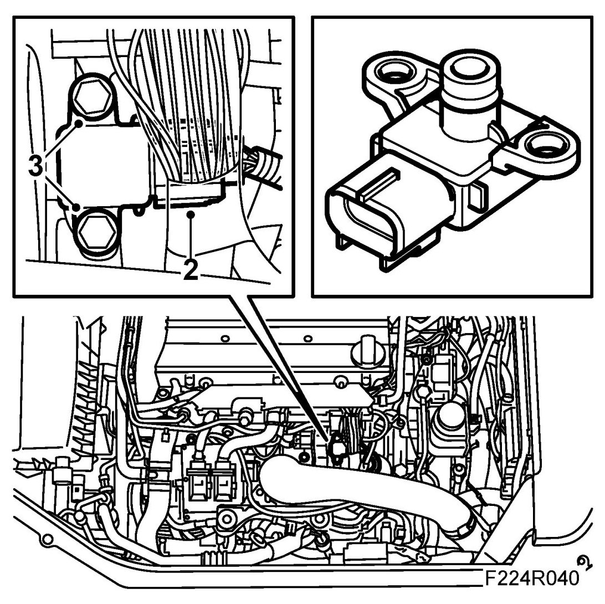
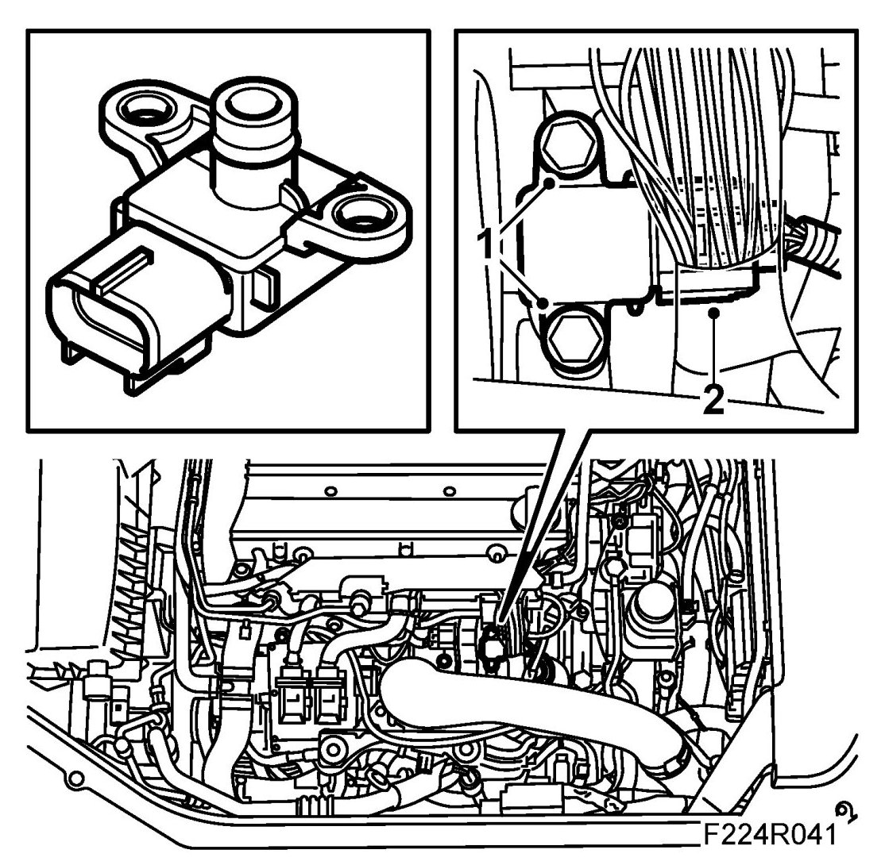
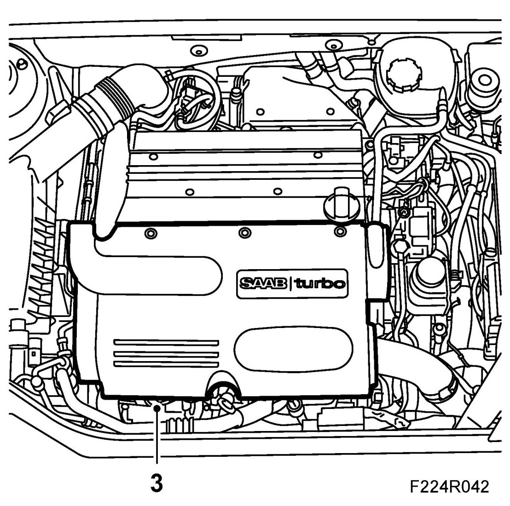

Manifold Absolute Pressure Sensor (431)
Manifold Absolute Pressure Sensor (431)
To remove
1. Remove the upper engine cover.
2. Carefully press down the catch with a screwdriver and unplug the connector.

3. Remove the sensor.
To fit
1. Fit the sensor with a new O-ring sparingly lubricated with Vaseline.

2. Plug in the connector.
3. Replace the upper engine cover.
